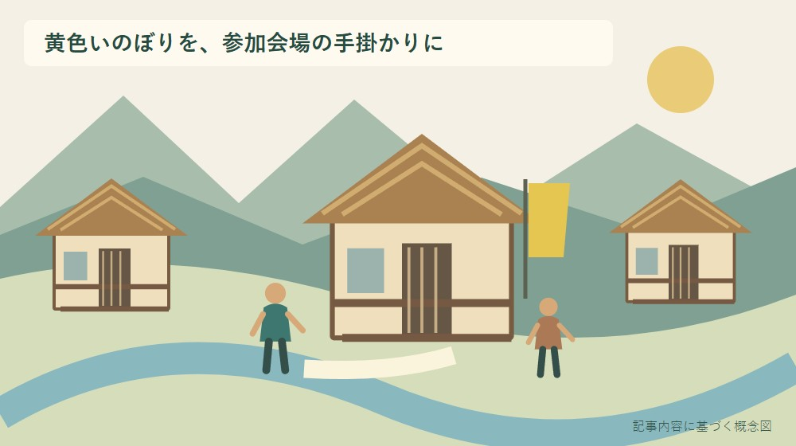
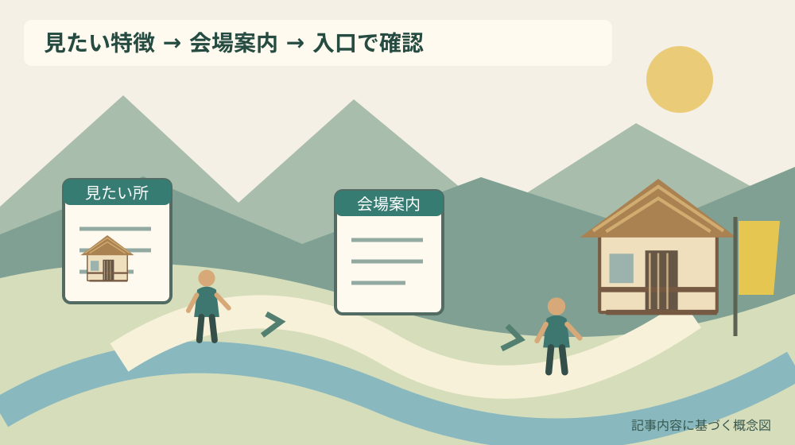

ぷぶふの日2026｜森町の古民家を訪ねる準備

Q. ぷぶふの日2026で、森町の古民家を見学するには？
A. 第25回かわせみ街道オープンハウス「ぷぶふの日」は2026年10月31日・11月1日、両日10時〜16時に森町の天方・三倉地区で開催予定です。町は古民家見学を案内し、参加店舗の目印を黄色いのぼり旗としています。全戸公開ではありません。今日は見たい建物の特徴を一つメモし、個別会場や撮影・駐車の条件は最新案内で確認してください。
家を開く人の暮らしを、見学の出発点にする
ぷぶふの日は、森町の天方・三倉地区の住民有志が暮らしや地域の魅力を紹介する機会です。家を開く側には、訪問者を迎える準備と、普段の暮らしを続ける仕事があります。古民家を見たい人は、その時間を借りて訪ねるというところから予定を考えられます。
大石浩之（磐田市／不動産業）です。私は、古い建物を外から眺めるだけでは分からない使われ方に、見学の価値があると考えます。ただし、地域全体を自由に入れる展示場のようには扱いません。参加会場と通常の住宅を区別することが、訪問の前提です。
この記事では、2026年9月30日に確認した森町の開催案内を使います。催しを何件回れるかより、古民家のどこを見たいか、公開範囲をどう確認するかを整理します。案内本文で確かめられない個別の建物名や駐車場所は、推測で埋めません。
事実整理｜第25回は10月31日と11月1日
森町の開催案内によると、第25回かわせみ街道オープンハウス「ぷぶふの日」は、2026年10月31日土曜日と11月1日日曜日に開かれる予定です。時間は両日とも午前10時から午後4時です。日付と時間を一組で予定表に残してください。
町は、天方・三倉地区を森町北部の山村地域として紹介しています。天方地区を流れる吉川と、三倉地区を流れる三倉川の川沿いの道が「かわせみ街道」です。一つの建物で全企画が行われる催し、と読み替えないようにします。
町の説明には、参加者の家、店舗、神社などへの訪問、古民家の見学、絹織物や陶芸作品の展示が含まれます。建築だけに限る催しではありませんが、家の使われ方に関心を持って訪ねる入口があります。産品販売などとは目的を分けて計画できます。
参加店舗の目印は黄色いのぼり旗です。2026年9月30日に町のページを直接取得すると、参加者一覧と地図を載せた第25回のチラシが公開されていました。町の本文だけでなく、チラシの会場番号、開催日、駐車の注意を組み合わせて準備できます。
町のページの表示更新日は2026年9月28日です。検索経由では8月12日更新の古い本文が残っていましたが、公開直前に直接取得した最新本文を優先しました。9月28日を初回公表日とは断定せず、チラシが公開済みであることを今回の判断材料にします。
古民家の指定と、催しでの公開は別に確かめる
森町の「文化財」ページは、友田家住宅などの指定文化財や街並みを紹介しています。町に古い建築が残る背景を知る資料ですが、その掲載物件がぷぶふの日の参加会場だという証拠にはなりません。文化財の一覧を、そのまま今回の見学先一覧にしないでください。
古民家という呼び方だけでは、建築年代、文化財の指定、現在の使われ方は確定できません。見学時には、説明された内容と、外観から自分が受けた印象を分けてメモします。古そうに見えることを根拠に、年代や価値を言い切る必要はありません。
建物の読み方を準備するなら、民家を建築年代・間取り・改変根拠で読む記事が使えます。資料をすべて覚えるためでなく、現地で確かめたい問いを一つ選ぶために読むと、説明する人への質問も短くできます。
私は、最初の問いを「今、この場所をどのように使っていますか」に置く方法がよいと考えます。昔の形だけでなく、暮らしに合わせて手を入れた部分にも目が向きます。住んでいる家なら、生活の事情へ踏み込みすぎない範囲で尋ねます。
建築見学の準備｜見たい建物を一つメモする
ぷぶふの日で古民家を見学したい人が今日できることは、公式チラシから見たい建物を一つメモすることです。例えば9番「古民家ギャラリー」は、森町鍛治島325の伝統的日本家屋として紹介されています。作品と建物のどちらを見たいか、自分の関心も一行添えます。
公式チラシの9番「古民家ギャラリー」は、1925年（大正14年）の日本家屋と説明されています。10番「モウマモナク」は自宅の古民家での染てぬぐい販売やキャンドルの企画です。古民家という共通点があっても、公開の目的と内容をそれぞれ読んで選びます。
家族で出かけるなら、各自が見たいものを一つずつ出します。建物を見たい人と、作品を見たい人では、立ち止まる場所が違います。全員が同じ速度で回る計画にせず、合流場所と帰る時刻を決める方が、見学の満足と負担を調整しやすくなります。
全体の開催は両日10時から16時ですが、チラシには一日だけ参加する会場もあります。例えば16番「つよぽんち」は11月1日のみです。全体日程をすべての会場へ当てはめず、会場ごとの日付を見ます。閉会直前に入って長く見られるとも考えず、移動と見学の時間を残します。
建物の利用方法を比較したい場合は、森町の古建築活用を比較する記事も参考になります。公開施設と暮らしの続く住宅では、見せられる場所が異なります。同じ広さや説明の量を期待せずに訪ねる準備になります。
森町での暮らしへの影響｜道も玄関も生活の場所
天方・三倉地区の会場を訪ねる計画では、公式チラシの地図と駐車案内を確認します。チラシは脇見運転に注意を促し、指定場所以外への駐車や開放場所以外への立入りを控えるよう案内しています。空いて見える土地を駐車場と判断しないでください。
私は、同乗する家族に案内の確認を分担してもらう方法を勧めます。運転する人が、道を探し、旗を探し、駐車場所まで同時に判断する計画は避けたいからです。今日のメモに「駐車情報を確認する人」を一人書くだけでも、役割が見えます。
三倉・天方の移動を考える記事では、距離だけでなく移動の代替を扱っています。今回も、行きたい会場へ着けることと、帰りの手段があることを別に確認します。イベント専用の交通があるとは、この開催本文からは言えません。
同行者に段差や長い歩行への不安がある場合は、建物の公開範囲と移動条件を先に確認します。古民家という名前だけで階段や床の状態を決めつけず、必要な条件を具体的に尋ねます。確認できない間は、無理に室内見学を前提としない予定にします。
良い点｜住んでいる人の説明と建物を結び付けられる
ぷぶふの日の良い点は、住民有志による暮らしの紹介と、家や店舗などへの訪問が結び付いていることです。建物の形だけを資料で読む場合とは違い、公開された範囲で、現在の利用を知る機会があります。町の案内が古民家見学を明記していることも手掛かりです。
私は、古い家の価値を、改変の少なさだけで測らない見学にしたいと考えます。住み続けるために用途を変えた場所にも、家を残す工夫があるからです。説明を聞ける場合は、昔の形を問うだけでなく、現在使ううえで工夫した点へ目を向けます。
黄色いのぼり旗という目印が示されている点も、初めて訪ねる人には助けになります。地図の住所だけで探すより、参加している場所を現地で識別する材料が増えます。ただし、旗を見つけた後も、入ってよい入口や範囲は会場の案内で確認します。
全体で二日間の開催予定があり、チラシには会場別の内容と案内図がそろっています。家族の関心に合わせて日程と訪問先を照合できる点を評価します。私は、全部回ると考えるより、関心のある会場へ時間を残し、見た内容を記憶に残す使い方を勧めます。
注文したい点｜公開範囲と撮影条件は現地で聞く
ぷぶふの日の個別会場と駐車の手掛かりは、公開済みのチラシで確認できます。一方、部屋ごとの公開範囲や写真撮影の細かな条件までは分かりません。私は、チラシで分かる準備を先に済ませ、住民に聞く質問を公開範囲と撮影へ絞るとよいと考えます。
撮影できる範囲は、今回確認した開催本文とチラシからは確定できません。展示作品、室内、住民の顔が写る場合は、それぞれ許可の扱いが違う可能性があります。カメラを向ける前に会場で尋ね、撮影できても公開投稿してよいかは別に確認する方法を勧めます。
「自由に訪問」という説明を、どの敷地や部屋へも立ち入れる意味に広げないでください。対象は参加者の家や店舗などです。玄関から見える奥の部屋や隣家の庭まで公開されているとは限りません。表示が分からなければ、入口で一度止まって尋ねます。
私にも、気軽に立ち寄る催しに、確認事項を並べすぎてよいのかという迷いがあります。だから準備を大げさな調査にはしません。見たい場所、駐車、撮影の三つだけを手元に残し、公開案内で答えが出る項目は事前に済ませるようにします。

対案・結論｜一軒への関心から訪問を組む
ぷぶふの日の建築見学は、見たい特徴を一つ選び、チラシの会場番号、内容、参加日を照合する順序で準備できます。今日、建物を一軒メモしたら、駐車場所の説明も一緒に読みます。写真撮影など分からない条件だけを、会場で尋ねる質問として残します。
見学したい内容と、チラシに書かれた公開内容が重なるかを確認します。作品展示の会場なら、建物全体の案内まで期待しないようにします。古民家の会場でも、人数、入口、見学できる部屋など、現地で追加の注意が示された場合はその条件を優先してください。
現地での最初の一言は、「どこから見学できますか」で足ります。相手が販売や案内に対応しているときは、長い建築の質問を続けず、区切りを待ちます。家を開く人が一人で何役も担っている可能性を、訪問者の側の配慮として予定に織り込みます。
見学を終える際は、物を動かしたり、戸を開閉したりしたままにしないよう、会場の指示に従います。私の提案は、特別な手伝いを申し出ることより、自分の訪問で増えた片付けを残さないことです。短いお礼と丁寧な退出も、次の公開への配慮になります。
チラシの地図は、会場番号と注意書きを組にする
公式チラシには、9番「古民家ギャラリー」が高台の家であり、対向車とのすれ違いに注意する案内があります。10番「モウマモナク」は、日月神社・かづさやへ曲がる手前の道沿いの古民家と説明されています。会場名だけを頼りに走らず、出発前に位置関係を確認します。
全体案内は雨天決行ですが、18番「なかむら横丁」には10月31日のみ、雨天時は11月1日へ延期という個別の注意があります。全体の開催条件と、各会場の参加条件は分けて読む必要があります。当日訪ねる会場の欄に印を付ければ、見落としを減らせます。
私は、チラシを助手席の人と共有し、道が分からなくなったら安全に確認できる場所で見直す段取りを勧めます。建物探しに気を取られて運転することは避けます。地図の文章にある所要時間は会場探しの目安であり、道路や天候による変化を見込んでください。
記録に残すのは、家の値段より使われ方
古民家見学のノートには、会場名、訪問日、見学した範囲、説明を聞いた内容を分けて残します。写真だけだと、梁を見たのか、道具を見たのか、後から目的を思い出しにくくなります。自分が気になった一点を短い文章で添えると比較しやすくなります。
家の所有者、維持費、修繕の事情などは、公開されていない私的な情報です。興味があるからと聞き出す対象にはしません。話してよい範囲で説明された場合も、その場で聞くことと、誰でも見られる場所へ載せることは分けて考えます。
建物が気に入ったとしても、売物件や賃貸物件として公開されているとは限りません。住民が家を開くことを、住まいを手放す意思と結び付けないでください。見学する側の関心と、暮らしている側の目的の違いを、そのまま尊重します。
自分の実家へ取り入れたい工夫が見つかったら、「この家と同じにする」と決めず、日当たり、家族構成、使う部屋などの条件を考えます。見学先の工夫は発想の材料です。自宅の工事や構造の判断は、現地を見られる専門家へ相談します。
大石の視点｜家を開く手間まで借りて見学する
私は、古民家の見学では家を開く手間まで借りていると考えます。建物が残っているだけで、見学が自動的に成立するわけではありません。準備、案内、片付けをする担い手の時間が加わって、暮らしの一部を見せてもらえる機会になります。
私なら、出かける前のノートに「見たい建物を一つ」と書き、横に「何を知りたいか」を添えます。これは現地での実話ではなく、私の見学への考え方です。数を回ることを目的にしなければ、相手の説明を急がせず、自分の問いも具体的にできます。
森町の古い家には、残す人、使う人、次へ渡す人の事情が重なります。外から来た私が、公開を続けるべきだと簡単には言えません。公開が続く条件を知り、見学者として負担を増やさないことから、建物の可能性を考えたいと思います。
まとめ｜日程を控え、公開範囲は当日の案内で確かめる
ぷぶふの日2026は10月31日と11月1日、両日10時から16時の開催予定です。天方・三倉地区の参加会場を訪ねる催しで、全戸公開ではありません。今日は公開済みのチラシから見たい建物を一つ選び、会場別の参加日と駐車案内を確認してください。
当日は黄色いのぼり旗を手掛かりにしつつ、入口、見学範囲、撮影の可否を会場で確かめます。家を開いてくれる人の準備を尊重することと、建築を楽しむことは両立できます。帰宅後には、見た数より心に残った使い方を一つ記録する方法を勧めます。
よくある質問
ぷぶふの日2026の古民家見学は、参加会場と公開範囲の確認から準備します。
2026年の開催日はいつですか？
第25回かわせみ街道オープンハウス「ぷぶふの日」は、2026年10月31日土曜日と11月1日日曜日、両日10時から16時の開催予定です。場所は森町の天方・三倉地区です。2026年9月30日に町の本文を確認しました。個別会場や開催に関する追加案内は、出発前に町の公式ページで確認してください。
天方・三倉地区の家はどこでも見学できますか？
どの住宅でも見学できる催しではありません。対象は参加者の家、店舗、神社などで、目印は黄色いのぼり旗です。公開済みの公式チラシには会場一覧があり、9番「古民家ギャラリー」などを確認できます。会場でもすべての部屋が公開されるとは限らないため、入口で範囲を確かめ、無断で立ち入らないようにします。
古民家の写真撮影や駐車は自由ですか？
2026年9月30日に確認した公式チラシには、会場別の駐車案内があります。地図の会場番号と対応させ、指定場所以外には駐車しないでください。撮影の細かな条件は確定できないため、会場で許可を尋ねます。室内や作品、住民を写す場合は、撮影と公開投稿の可否を分けて確認してください。
実家の建物や管理の情報を整理する場合は、実家カルテも利用できます。売却未定でも使える本サイト運営会社の民間サービスです。森町や各施設の公式手続ではなく、利用は任意です。
公式情報源
2026年9月30日確認（2026年9月確認）。開催・受付・公開状況や数値は変わる場合があります。行動前に公式案内を確認し、個別の税務・契約・工事などの判断は担当窓口や専門家に相談してください。